양산 소토 공장 화장실청소
양산 소토 공장 화장실에서 세면대, 소변기, 양변기와 바닥을 집중적으로 청소했습니다. 공장 화장실은 작업복과 안전화에서 유입되는 먼지, 물 사용으로 생기는 물때, 이용량에 따른 생활오염이 함께 누적되기 쉬운 공간입니다. 이번 현장은 위생도기뿐 아니라 바닥 줄눈과 모서리까지 함께 관리했습니다.

공장 화장실은 바닥과 위생도기를 함께 관리해야 합니다
이용 인원이 많은 사업장 화장실은 세면대나 변기만 청소해서는 전체 오염이 쉽게 줄지 않습니다. 바닥 줄눈, 벽 하단, 칸막이 다리, 위생도기 접점까지 함께 관리해야 냄새와 묵은 때가 반복되는 구간을 줄일 수 있습니다. 퍼펙트케어는 현장 오염도에 따라 필요한 범위를 확인한 뒤 작업합니다.
청소 전 상태
세면대와 소변기, 양변기 주변에 물때와 생활오염이 누적되어 있었고 바닥 타일과 줄눈에는 검은 오염이 넓게 보였습니다. 특히 위생도기 주변과 모서리는 반복적인 물 사용 때문에 오염이 눌어붙기 쉬운 상태였습니다.
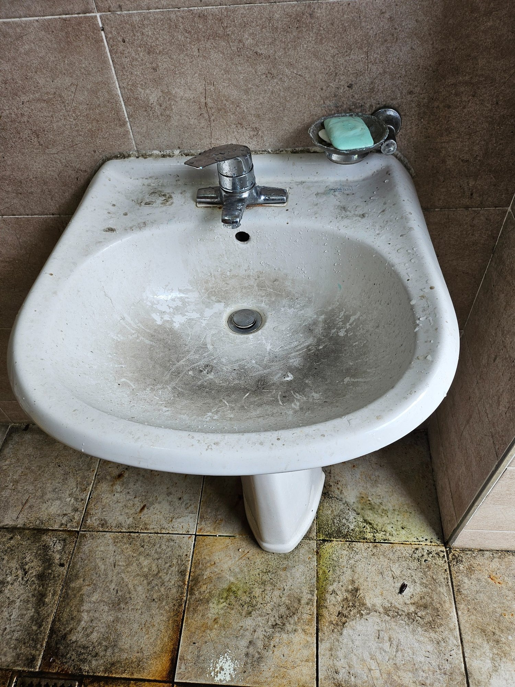
세면대와 바닥에 누적된 오염
세면대 표면에는 물때와 검은 오염이 넓게 남아 있었고 하부 바닥에도 오래된 때가 겹쳐 있었습니다. 공장 화장실은 작업 중 발생한 먼지와 신발 오염이 함께 유입되기 쉬워 위생도기와 바닥을 따로 관리하기보다 한 구역으로 묶어 청소하는 것이 효과적입니다.
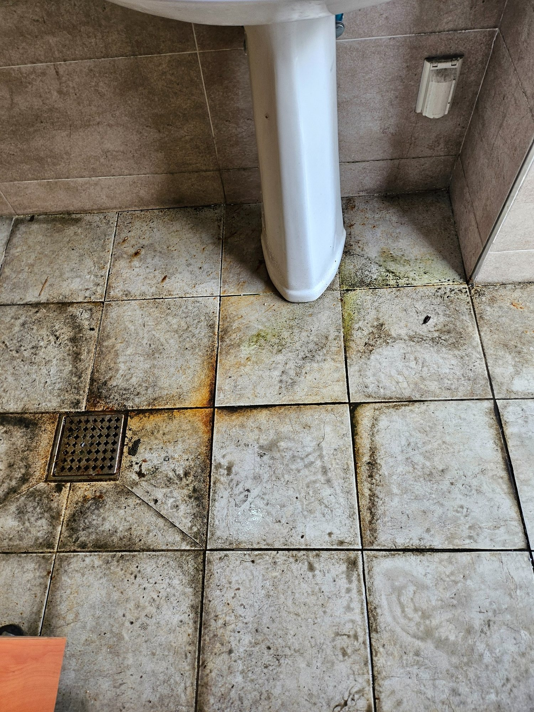
바닥 줄눈과 모서리의 묵은 때
바닥 타일의 줄눈과 벽 하단, 위생도기 주변에 검은 오염이 집중되어 있었습니다. 이용량이 많은 화장실은 중앙보다 모서리와 설비 주변에 오염이 더 오래 남는 경우가 많아 가장자리부터 상태를 확인했습니다.
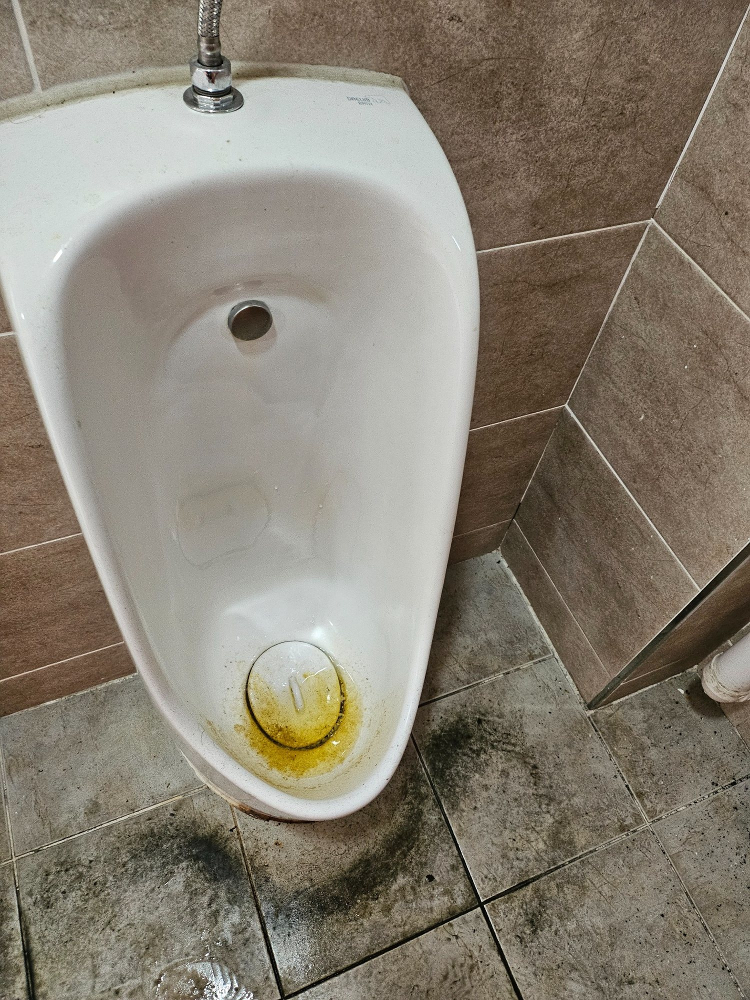
소변기 하단과 배수부 오염
소변기 내부와 하단에는 사용 흔적과 물때가 남아 있었습니다. 눈에 보이는 그릇 면뿐 아니라 배수부와 하단 가장자리, 주변 바닥까지 함께 세척해야 냄새 원인이 되는 잔여물을 줄일 수 있습니다.
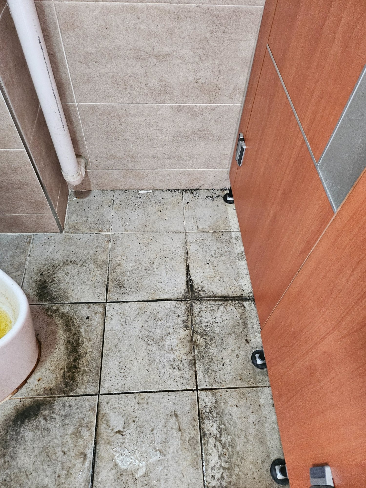
위생도기 주변 바닥 집중 오염
세면대와 소변기 주변 바닥은 물 사용이 많아 오염이 타일 표면에 눌어붙기 쉽습니다. 작업 전 오염 정도를 구분해 세정이 필요한 부분과 반복 작업이 필요한 부분을 나눴습니다.
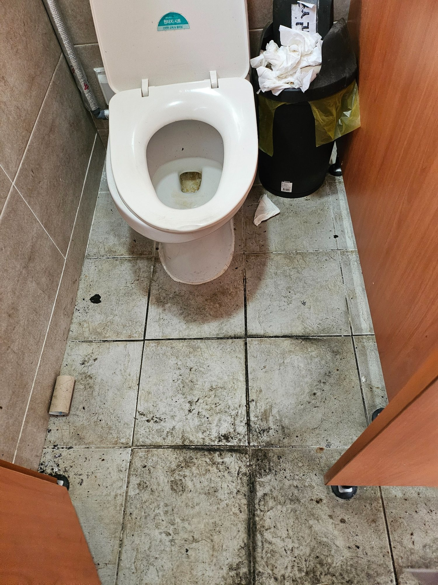
양변기와 칸막이 하부 점검
양변기 주변과 칸막이 하부도 함께 확인했습니다. 변기 자체가 비교적 깨끗해 보여도 바닥 접점과 칸막이 다리 주변에는 먼지와 오염이 남아 있는 경우가 많습니다. 눈높이 아래의 사각지대까지 작업 범위에 포함했습니다.
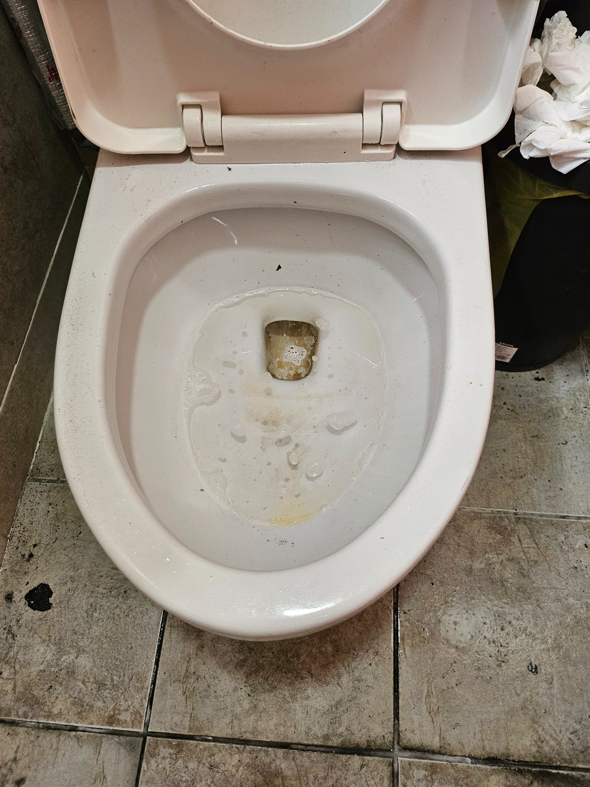
변기 내부와 주변 생활오염
양변기 내부와 바닥 접점에 남은 오염을 확인했습니다. 공장 화장실은 사용 인원이 많으면 짧은 기간에도 오염이 빠르게 누적될 수 있어 위생도기 표면과 주변 바닥을 동시에 관리하는 것이 중요합니다.
집중청소와 작업 후
위생도기 표면과 수전, 배수부를 정리하고 바닥과 모서리를 반복 세척했습니다. 오래된 타일의 변색이나 마모는 청소만으로 새것처럼 바뀌지 않을 수 있지만, 제거 가능한 묵은 오염과 생활 때를 줄이고 이후 관리가 쉬운 상태로 마감했습니다.
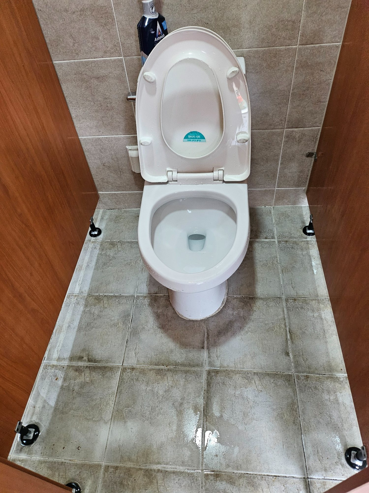
세척 후 바닥 오염 확인
세정 작업 후 바닥에 남은 오염을 다시 확인하며 반복 세척을 진행했습니다. 오래된 바닥은 재질 자체의 변색이나 마모가 남을 수 있어 오염 제거와 기존 변색을 구분하면서 작업합니다.
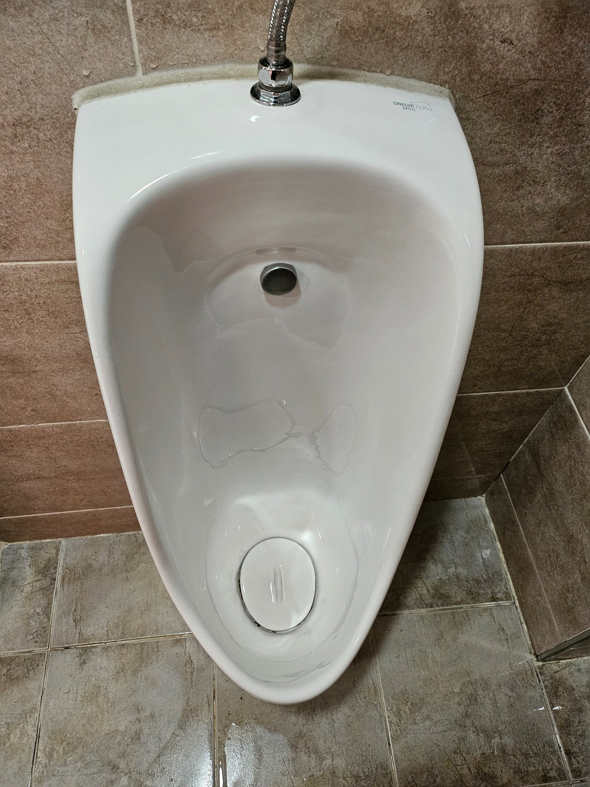
소변기 내부 물때 정리
소변기 내부의 누런 물때와 표면 오염을 정리한 뒤 배수부와 가장자리를 다시 확인했습니다. 위생도기 표면이 밝아지면 남은 오염도 쉽게 확인할 수 있어 마지막에 물기를 제거하며 마무리합니다.
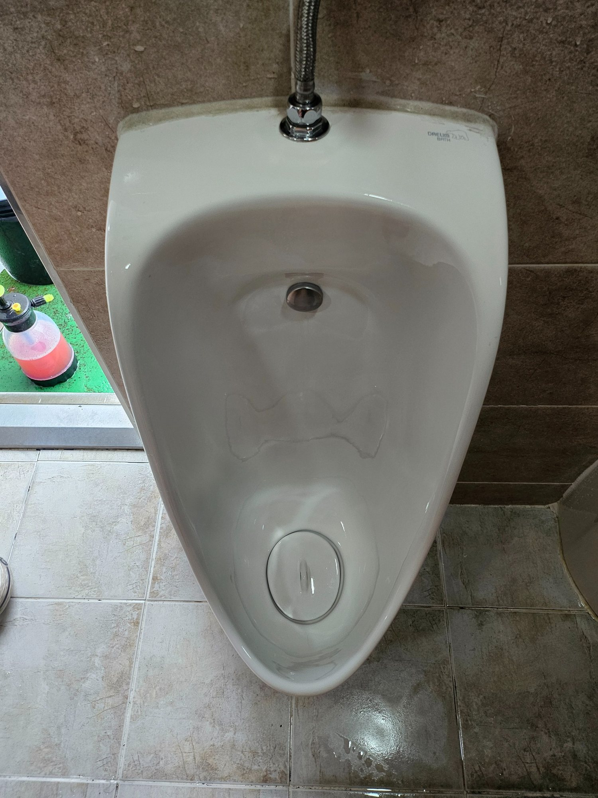
소변기 표면과 하부 마감
소변기 전면과 내부가 정돈되어 작업 전보다 훨씬 깔끔한 상태가 되었습니다. 주변 타일과 바닥 접점까지 연결해서 청소해 위생도기만 따로 떠 보이지 않도록 전체 마감을 맞췄습니다.
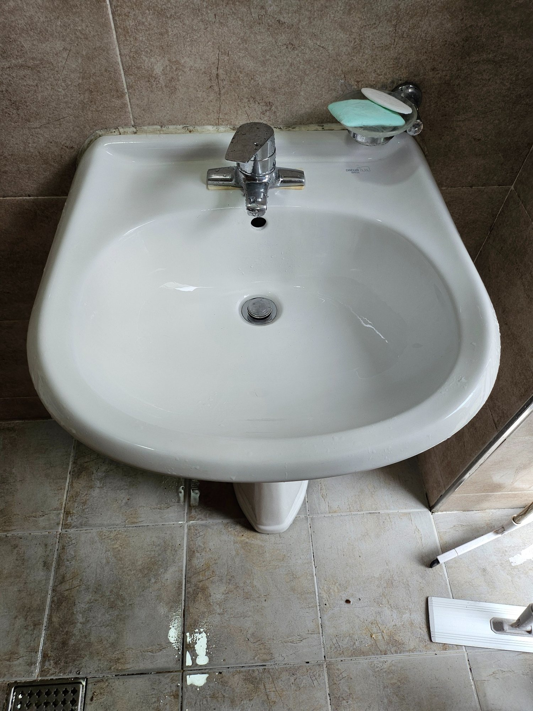
양변기와 바닥 주변 정리
양변기 주변의 오염을 정리하고 칸막이 하부와 바닥 접점까지 확인했습니다. 바닥의 오래된 사용 흔적은 일부 남을 수 있지만 제거 가능한 생활오염과 찌든 때를 최대한 줄여 관리가 쉬운 상태로 마감했습니다.
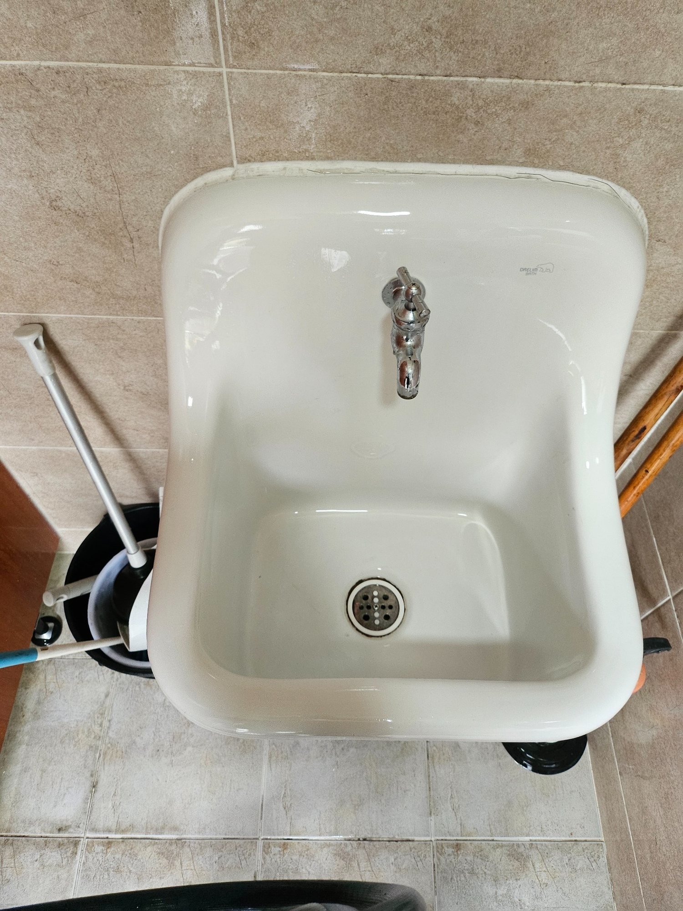
세면대 표면 청소 후
작업 전 물때와 검은 오염이 많았던 세면대가 밝고 매끄럽게 정리되었습니다. 수전과 배수구 주변까지 확인해 물자국을 줄이고, 위생도기 표면에 남은 세정 잔여물이 없도록 마무리했습니다.
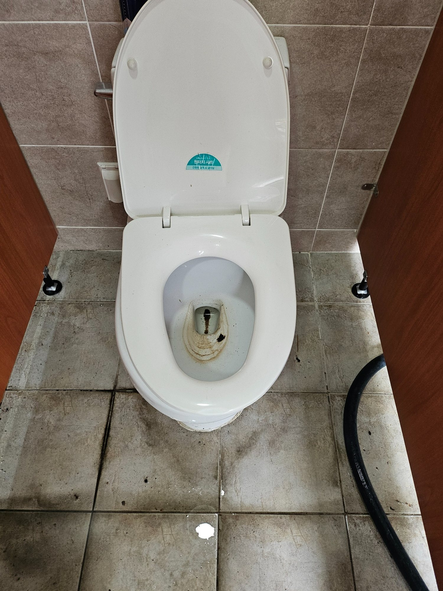
공장 화장실 전체 마무리
마지막 단계에서는 세면대, 소변기, 양변기, 바닥과 모서리를 다시 확인합니다. 공장 화장실은 이용 빈도가 높아 한 번의 대청소 후에도 정기적인 관리 주기를 잡아두면 오염이 심해지는 속도를 줄이는 데 도움이 됩니다.
양산 소토 공장 화장실청소 무료 방문견적
공장 규모, 화장실 수, 위생도기 수, 이용 인원과 바닥 오염도를 현장에서 확인한 뒤 필요한 작업 범위를 안내합니다. 대청소 후 정기관리 상담도 가능합니다.